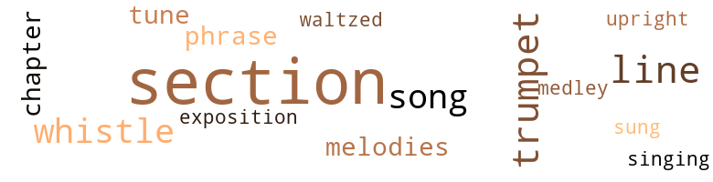
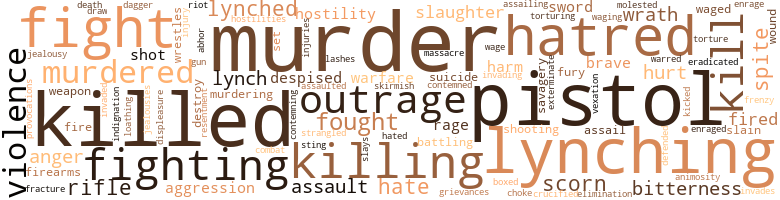

Hindered Hand or, The Reign of the Repressionist, by Griggs, Sutton Elbert (1905)
59 music-related terms matched in this text.
Most frequent terms in this topic: section (27); trumpet (5); song (4); whistle (4); line (3)
chapter.n.01
Definition: a subdivision of a written work; usually numbered and titled
| word | sentence |
|---|---|
| chapter | IT WILL be recalled that in a very early chapter we saw a cadaverous looking white man , wearing a much worn suit of clothes , making a sketch of Ensal 's home , as the latter was going out to make arrangements with Mrs. Crawford for the introduction of Tiara into the best circles of Negro life in Almaville . |
| chapter | Leroy Crutcher , of whom we caught a glimpse or so in an earlier chapter , happened to be passing along the sidewalk that ran parallel with the side of the Daleman residence . |
cornet.n.01
Definition: a brass musical instrument with a brilliant tone; has a narrow tube and a flared bell and is played by means of valves
| word | sentence |
|---|---|
| trumpet | Martin had provided himself with a speaking trumpet and through it he now shouted , " You people are permitted to stand in front uv these premises , but you must n't ' tempt to git over my frent yard fence . " |
| trumpet | Some one suggested the getting of a trumpet to induce whoever the party was to allow officers of the law to come in unmolested . |
| trumpet | The trumpet was procured and the following dialogue took place . |
| trumpet | Gus returned to his trumpet and said , " I have tellerphoned ' round the world and there ai n't no justice nowhere fur a black man . |
| trumpet | Through his trumpet Martin shouted , " Flag uv truce held by the lady wo n't be shot at , purvided no one else comes with her . " |
exposition.n.04
Definition: (music) the section of a movement (especially in sonata form) where the major musical themes first occur
| word | sentence |
|---|---|
| exposition | The ability of the young man was unquestioned and his exposition of the fundamental principles of the Democratic party was all that could be desired , they felt , but they wanted to hear him on the one question that was the final test of his acceptability , his attitude on the race question . |
medley.n.01
Definition: a musical composition consisting of a series of songs or other musical pieces from various sources
| word | sentence |
|---|---|
| medley | " The medley of motives working through all the past has at last produced in America the strongest aggregation of Negro life that has at any time manifested itself upon the earth . |
phrase.n.02
Definition: a short musical passage
| word | sentence |
|---|---|
| phrase | Why do n't you Southern people begin a campaign of education and let the North know your real mind , so that we wo n't tread on your corns so often , to use a homely phrase . " |
| phrase | I had five planks in my platform and , to match your homely phrase with another one , they took like hot cakes , " said the governor . |
section.n.01
Definition: a self-contained part of a larger composition (written or musical)
| word | sentence |
|---|---|
| section | " My boy , " said Mr. Daleman , " I have thought to have a talk with you concerning the dark shadow that projects itself over our section , the Negro problem . |
| section | Tell the North that down in this Southland there is an element of as noble men as the world affords ; men with a keen sense of justice and an unfaltering purpose to lift our section to a position of high esteem in the estimation of the world . |
| section | We of the South ( you see I call myself one of them ) , know not what the future has in store for our beloved section , but we face the ordeal with the grim determination of our race . |
| section | With murder and lawnessness rampant in the Southland , this section 's woes are to be many . |
| section | Who can tell the contents of the storm cloud that hangs low over this section where the tragedy of the ages is being enacted ? |
| section | As the Negro section of the coach was the forward section and next to the baggage car , any person coming from the section set apart for the whites would be to the back of the Negro passengers . |
| section | As the Negro section of the coach was the forward section and next to the baggage car , any person coming from the section set apart for the whites would be to the back of the Negro passengers . |
| section | " It is a pity that our section can find no place for so true a soul presided over by so bright a mind , " thought the judge , his eyes following young Maul , as the latter passed out of the court room , and through the court house yard , looking neither to the right nor to the left . |
| section | The city of Almaville was soon in a ferment and the white people poured out to that section of the town . |
| section | " In case of trouble , this crew in here could n't help a fellow much , " said the porter , moving his eyes about slowly again , taking note one by one of those in the section with him . |
| section | " My scheme helps you and helps the Pan-Slavist cause and disposes of a common foe , a section of the white race . |
| section | She came into the section of the coach for Negroes , and she and a Negro girl created a scene . " |
| section | Getting on the train she took a seat in the section of the coach set apart for Negroes . |
| section | Eunice groped her way back to the section of the coach set apart for Negroes . |
| section | " Repression in the South must die and men with broader visions in that section must take charge of affairs . |
| section | The door from the section for the whites opened and two white men entered . |
| section | That was indeed a horrible affair and our section , according to the law of retribution , will have it to pay for , " replied young Maul , won by Ensal 's kindly tone and look . |
| section | " Only one thing is now needed to gladden the hearts of the Negroes of the United States and cause them to turn enthusiastically to the making of the South the grandest section of the Union , " said Ensal . |
| section | " Only one thing is now needed to gladden the hearts of the Negroes of the United States and cause them to turn enthusiastically to the making of the South the grandest section of the Union , " said Ensal . |
| section | " The radicals who have oppressed the Negroes of the South and sent them North , sent them forth with heart burnings , and through the pivotal states of the North they are ever on guard to turn the tide of battle against your section . |
| section | Radicalism , then , is building up a political power in the North that will be a potent factor in continuing the isolation and impotence of your section , and will render the wish of a Negro ward politician of the North of more consequence than the combined pleadings of all your congressional delegation from the South . |
| section | Ensal Ellwood , the dark young man , looking around to see if the parties who had entered had closed the door behind them ( for the adjoining section was the white people 's smoking apartment , and care had to be exercised to keep smoke and tobacco fumes out ) , saw the two white men about to take a drink . |
| section | That the young people may not be wedded to the traditions of their section , he would impress the young North that what their fathers did in the way of bestowing equality of citizenship upon the Negro , was the result of a leadership blind with the spirit of revenge . |
| section | As a result of that war the Northern and controlling section of the country felt impelled by the logic of the situation to force an unaccepted relation upon an alien race , thereby providing the one outstanding section of the Anglo-Saxon race with some form of a race problem . |
| section | As a result of that war the Northern and controlling section of the country felt impelled by the logic of the situation to force an unaccepted relation upon an alien race , thereby providing the one outstanding section of the Anglo-Saxon race with some form of a race problem . |
| section | Then stand on the platform leading from this coach to the coach in which the Negroes have their section . |
| section | Passing through the smoker for the white men she entered the Negro section . |
sing.v.02
Definition: produce tones with the voice
| word | sentence |
|---|---|
| sung | Our poets have sung in loftiest strains of the devotion of woman . |
singing.n.01
Definition: the act of singing vocal music
| word | sentence |
|---|---|
| singing | The singing of the American Negro is said to lack the martial strain found in the fatherland . |
song.n.01
Definition: a short musical composition with words
| word | sentence |
|---|---|
| song | His eyes looked up into scores of pistols now leveled at him , and as they rang out their death song Gus Martin smiled and died . |
| song | Let me beseech you to vex not this social stranger within your borders ; the stranger who invades your swamps and drains them into his system for your comfort ; who creeps through the slime of your sewers : who wrestles with the heat in your ditches and fields ; who has borne your onerous burdens and cheered you with his song as he toiled ; who has never heard the war whoop but that he has prepared for battle ; whose one hope is to be allowed to live in peace by your side and develop his powers and those of his children that they may be factors in making of this land , the greatest in goodness in all this world . |
| song | They hummed over and over again the " rag time " song , " Coon , coon , coon , I wish my color would fade ! " |
| song | In the contact of the street workman with his boss ; in the cook kitchen ; in the nursery room ; in the concubine chamber ; in the street song ; m the brothel ; in the philosophizings of the minstrel performer ; in the literature which he will ere long create , by means of which there can be contact not personal ; in myriad ways the Negro will write something upon the soul of the white man . |
tune.n.01
Definition: a succession of notes forming a distinctive sequence
| word | sentence |
|---|---|
| lines | The offerings of the humane class of Southern white people who would like to settle the whole question upon the basis of the development of the Negro race along restricted lines , must , because of the danger that lurks in the principle of repression , be rejected as totally inadequate . |
| tune | Our bodies have been fitted to your climes , our spirits have been put in tune with yours . |
| line | Word was therefore being passed down the line that every man was to act for himself , that each individual was himself to resent the injustices and indignities perpetrated upon him , and that each man whose life was threatened in a lawless way could help the cause of the race by killing as many as possible of the lawless band , it being contended that the adding of the element of danger to mob life would make many less inclined to lawlessness . |
| line | It soon became evident to Tiara that she could not stand the strain of a life of hopeless brooding and Ensal had not long been out of America before she began to cast around for a line of endeavor . |
| lines | I have several more lines of attack . |
| tune | In an address to the whole people , he said : " A power that would wrong a race , that would in any way restrict human growth , that would not have the nation a fair and open field , is out of tune with heaven , is working at cross purposes with the whole universe , and will carry into an abyss all whom it can mislead . " |
| melodies | Over against Mr. Dixon 's representation of Negro worship as a heathenish affair , we place the old plantation melodies evolved in those and earlier days . |
| melodies | Charged as these melodies are with true religious fervor , they stand as a bulwark against all who would assail these earlier gropings of the race after the unknown God . |
| line | In the long line of men of letters of the Anglo-Saxon race we find no counterpart of Mr. Dixon . |
upright.n.02
Definition: a piano with a vertical sounding board
| word | sentence |
|---|---|
| upright | MR. SEABRIGHT sat upright in bed and rubbed his eyes . |
waltz.v.01
Definition: dance a waltz
| word | sentence |
|---|---|
| waltzed | He leaped out of his chair and waltzed across the room , kissed his wife and darted through the door . |
whistle.v.01
Definition: make whistling sounds
| word | sentence |
|---|---|
| whistle | Well , this train now moving toward Almaville , queen city of the South , measured by the results that developed from that night 's journey , is fully entitled to all its fretting and fuming , brag and bluster of steam and smoke , and to its wearisome jangle of clanging bell and shrieking whistle and rumbling wheel . |
| whistle | The shrieking of the train whistle caused the fever of interest to rise in the little boy . |
| whistle | The mail man 's whistle blew , announcing the morning 's mail . |
| whistle | " No , my God ! " he said softly , Tearing the note to shreds , he fed it to the winds , lowered the window and began to whistle . |
330 violence-related terms matched in this text.
Most frequent terms in this topic: murder (18); killed (17); pistol (13); lynching (12); killing (11)
abhor.v.01
Definition: find repugnant
| word | sentence |
|---|---|
| abhor | These things have influenced the Negroes to abhor roustabout work . |
abhorrence.n.01
Definition: hate coupled with disgust
| word | sentence |
|---|---|
| loathing | The men looked at him in sullen , contemptuous silence , loathing and yet dreading him more than they did a serpent , for he conducted a house of ill-repute for the exclusive use of white men and Negro girls , and , being diligent in endeavoring to bring to his home any and all Negro girls to whom his white patrons might take a fancy , had great influence with this element of whites . |
aggravation.n.02
Definition: unfriendly behavior that causes anger or resentment
| word | sentence |
|---|---|
| provocations | If , when his services are in demand , the chiseler of the epitaph for Mr. Dixon 's tombstone desires to carve words that will be read with patience in the coming better days of the world , let him carve thus : " This misguided soul ignored all of the good in the aspiring Negro ; made every vicious offshoot that he pictured typical of the entire race ; presented all mistakes independent of their environments and provocations ; ignored or minimized all the evil in the more vicious element of whites ; said and did all things which he deemed necessary to leave behind him the greatest heritage of hatred the world has ever known . |
aggression.n.01
Definition: a disposition to behave aggressively
| word | sentence |
|---|---|
| aggression | " The campaign , then , is one that concerns not only the political forces of the nation , but the moral forces as well , since the pressing of this great wrong upon the hearts of an inoffensive , patient and aspiring people tends to their moral undoing , not only by the evil passions engendered , but also , as has been pointed out , by the withdrawing of so much of the attention of the race from internal development to the absorbing , exacting and , in some respects , narrowing task of battling against an alien aggression . |
| aggression | " Radicalism and aggression on the part of some of the whites constitute one phase of our problem , but the weakened condition of your race must also be reckoned with as a factor . |
| aggression | Africa has been one great battle field and the internecine strife of fighting Africans is in a measure responsible for the plight of the Negro race in the world , as a union of forces could have the better halted alien aggression . |
anger.n.01
Definition: a strong emotion; a feeling that is oriented toward some real or supposed grievance
| word | sentence |
|---|---|
| anger | Mrs. Harper looked steadily at her husband , her anger gone , now that she understood all . |
| anger | A flush of anger overspread Earl 's face , his lip quivered and he was upon the eve of uttering some biting remark . |
| anger | He suppressed his anger , however , and departed , determined upon making his offering of blood . |
| anger | His mystification and anger increased with the years , and he had kept a standing offer of a large reward for information leading to the discovery of his wife . |
| anger | " Would you cast aspersions upon a person 's character and treat the matter so lightly ? " asked Tiara , a flush of anger appearing on her face . |
animosity.n.01
Definition: a feeling of ill will arousing active hostility
| word | sentence |
|---|---|
| animosity | " Opposed to the element that is half friendly to the Negro because of his superior qualities as a foil and commercial asset , are the white industrial rivals of the Negro , whose animosity is whetted by their conscious inferiority in matters physical to this . |
annoyance.n.02
Definition: anger produced by some annoying irritation
| word | sentence |
|---|---|
| vexation | " What has voting to do with my getting a suitable place to ride on a train ? " said Eunice , tears of vexation coming into her eyes . |
assail.v.01
Definition: attack someone physically or emotionally
| word | sentence |
|---|---|
| assaulted | They dropped their stones and assumed a pacific and frightened attitude in time to impress the policeman that they were being needlessly assaulted by the Negro . |
attack.v.01
Definition: launch an attack or assault on; begin hostilities or start warfare with
| word | sentence |
|---|---|
| assailing | WITH ceaseless , tireless energy Earl Bluefield went everywhere in the North during the campaign that followed , assailing the political power in control of the South . |
| assail | Charged as these melodies are with true religious fervor , they stand as a bulwark against all who would assail these earlier gropings of the race after the unknown God . |
| assail | The master or his agent might assail every ear with profaneness aimed at the Negro man and outrage every sentiment of decencv in the foul language addressed to the Negro women ; but if one of the helpless creatures , goaded to resistance and crazed under tyranny , should answer back with impudence , or should relieve his mind with an oath , or restore indecency , he did so at the cost to himself of $ 1 for every outburst . |
battle.v.01
Definition: battle or contend against in or as if in a battle
| word | sentence |
|---|---|
| battling | " The campaign , then , is one that concerns not only the political forces of the nation , but the moral forces as well , since the pressing of this great wrong upon the hearts of an inoffensive , patient and aspiring people tends to their moral undoing , not only by the evil passions engendered , but also , as has been pointed out , by the withdrawing of so much of the attention of the race from internal development to the absorbing , exacting and , in some respects , narrowing task of battling against an alien aggression . |
| battling | Man has been battling upward through the ages , and his savage instincts have sought to mount the ladder with him as he climbed . |
box.v.03
Definition: engage in a boxing match
| word | sentence |
|---|---|
| boxed | And I boxed his ears for him . |
brush.n.06
Definition: a minor short-term fight
| word | sentence |
|---|---|
| skirmish | Then remember you Southerners sprang to arms so gallantly in that skirmish with Spain that you made a fine impression . |
contemn.v.01
Definition: look down on with disdain
| word | sentence |
|---|---|
| scorn | I want mother 's boy to scorn such things , to be way above them . " |
| contemned | " The administration of the government , then , inevitably falls into the hands of the less refined and a contemned race of an alien blood is handed over to them to be governed absolutely . |
| contemning | For fear that thou mayest deceive thyself thus , hear the oath of Earl the Ishmaelite : " By the wrenched chords of the heart of a boy spurned by a contemning father ; by the double shame of a mother wickedly wooed and despised in the one breath ; by the patience and optimism of the blood of my black forbears ; by the energy and persistence of my grant of blood from Europe - by all these mighty tokens , I make oath that this nation shall rest neither day nor night until this shadow is lifted from my soul . |
| despised | For fear that thou mayest deceive thyself thus , hear the oath of Earl the Ishmaelite : " By the wrenched chords of the heart of a boy spurned by a contemning father ; by the double shame of a mother wickedly wooed and despised in the one breath ; by the patience and optimism of the blood of my black forbears ; by the energy and persistence of my grant of blood from Europe - by all these mighty tokens , I make oath that this nation shall rest neither day nor night until this shadow is lifted from my soul . |
| scorn | He looked upon himself as a sort of exotic in the non-resisting Negro race and considered himself a special object of scorn on the part of the white people of the South , who seemed to him to resent his near approach unto them in blood , and to mistrust his kind more than all other elements in Negro life . |
| scorn | So utterly forlorn was the condition of the poor white that the enslaved Negro felt justified in meeting his protruding claim of racial superiority with contemptuous scorn . |
| despised | When the Civil War came this neglected and despised class suddenly became important and furnished its quota of soldiers and commanders . |
| scorn | But Mr. Dixon is a pioneer in the matter of seeking to attain his end by an attempt to thoroughly discredit the Negroes , to stir up the baser passions of men against them and to send them forth with a load of obloquy and the withering scorn of their fellows the world over , sufficient to appall a nation of angels . |
| despised | Uncle Tom 's Cabin grappled in the mire of Southern slavery and lifted a despised and helpless race into living sympathy with the white race at the North . |
| scorn | " But the States lately in insurrection rejected the Fourteenth Amendment with apparent scorn and defiance . |
| scorn | Soberly the great world consciousness will deal with this enemy of the human race , and the universal finger of scorn that will surely in the end be pointed toward him will render it certain that no other like unto him shall ever arise . |
craze.n.02
Definition: state of violent mental agitation
| word | sentence |
|---|---|
| frenzy | The city was in a frenzy . |
crucify.v.01
Definition: kill by nailing onto a cross
| word | sentence |
|---|---|
| Crucified | Crucified at the stake , while we men play the part of women , for , what can we do ? " said Ensal , looking at Earl , tears of pity for his people welling up in his eyes and stealing their way down his noble face . |
dagger.n.01
Definition: a short knife with a pointed blade used for piercing or stabbing
| word | sentence |
|---|---|
| dagger | words that pierced Tiara like a dagger each time they were uttered . |
death.n.08
Definition: the act of killing
| word | sentence |
|---|---|
| death | The jury that refused first to hang a white man for killing a Negro , seared its conscience , lowered its estimate of the value of human life , and now , without due process of law , the white man who kills any one is almost uniformly exempt from the death penalty . |
destroy.v.04
Definition: put (an animal) to death
| word | sentence |
|---|---|
| destroy | They ca n't destroy our love for one another , can they ? " said Foresta . |
| destroy | All Democrats whose articles I am reviewing were in various degrees , active or passive , principal or endorser , parties to this legislation ; and the fixed determination of the Republican party to thwart and destroy it called down upon its head all the anathemas of Democratic wrath . |
displeasure.n.01
Definition: the feeling of being displeased or annoyed or dissatisfied with someone or something
| word | sentence |
|---|---|
| displeasure | never , " said Ensal , losing all his wonted calmness , but kissing his mother to let her know that his displeasure over the subject did not extend to her for mentioning it . |
draw.v.23
Definition: pull (a person) apart with four horses tied to his extremities, so as to execute him
| word | sentence |
|---|---|
| draw | " I would be very thankful if before you leave you will sign a statement that I shall draw up , " said Mr. Seabright eagerly , going to his desk to do the writing . |
eliminate.v.03
Definition: kill in large numbers
| word | sentence |
|---|---|
| eradicated | Had the pulpit in question done its full duty in preaching against the institution of Slavery , it might have been eradicated by peaceful means , and the Civil War averted , was Ensal 's firm conviction , and he further felt that the future wellbeing of the South and the happy adjustment of the relations of the races was largely dependent upon the extent to which the white preachers taught the brotherhood of man and invoked the application of the Golden Rule to all pending problems . |
elimination.n.05
Definition: the murder of a competitor
| word | sentence |
|---|---|
| elimination | " The two elements thus far mentioned , the halffriends of the capitalist class and the rancorous industrial rivals of the Negro , are opposed to each other on the question of the Negro 's leaving the South , the former opposing and the latter favoring his elimination , but they are one in insisting that the Negro must be restricted in his aspirations . |
engage.v.07
Definition: carry on (wars, battles, or campaigns)
| word | sentence |
|---|---|
| waging | They have absolute charge of the means of transportation and intercommunication as well as the control of the necessary equipments for waging war . " |
| waged | " The war which brought emancipation was not in itself a deliberately planned altruistic movement , but was precipitated upon the country , and waged primarily in the interest of the solidarity of the white race in America . |
| wage | " Did not your God tell the Hebrews to wage a war of extermination on the Canaanites ? " asked the man . |
| waged | To have destroyed the rebellion on the battlefield and then permit it to seize the power of eleven States and put a check on all changes in the organic law necessary to prevent future rebellion would have been a weak and wicked conclusion to the grandest contest ever waged for human rights and for constitutional liberty . |
enrage.v.01
Definition: put into a rage; make violently angry
| word | sentence |
|---|---|
| enraged | So saying the young white man turned and walked away , leaving Eunice enraged and amazed at his effrontery . |
| enrage | I knew what kind of a sword he held over you , and while I resented his advances , I sought not to enrage him for your sake . " |
exterminate.v.01
Definition: kill en masse; kill on a large scale; kill many
| word | sentence |
|---|---|
| exterminate | Mark my words , " said Mr. Hostility , rising and bending across the table , " when the Anglo-Saxon feels the need of it , he is going to exterminate you folks . |
fight.n.02
Definition: the act of fighting; any contest or struggle
| word | sentence |
|---|---|
| combat | We must leave the scene of combat for a while in order to be prepared for the dramatic turn events were about to take . |
| fighting | Her first brush with the world as a member of the Negro race had aroused her fighting spirit . |
| fighting | You are sure there wo n't be any physical fighting ? " remarked the governor . |
| fighting | The Negro race is a great fighting race . |
| fighting | Be that as it may , it is very evident that the highest interest of the " poor whites " who bore the brunt of the fighting was to be conserved by the collapse rather than the triumph of the cause for which they fought with unsurpassed gallantry . |
fight.n.05
Definition: a boxing or wrestling match
| word | sentence |
|---|---|
| fight | Words passed between them and in the fight that ensued Dave wounded the policeman and was sentenced to prison for twenty years . |
| fight | He and a white man got in a fight . |
| fight | But you would prefer being the ones living to make the fight , would you not ? " asked the man , now nervously awaiting Ensal 's next words . |
| fight | A fight to a finish . " |
| fight | I see that whoever , in this fight of the races , gets the outsider is going to carry the day . |
| fight | And now , what is it that can keep all these together in virtually one nation , So that they do not fall out and fight , but live at peace , in brother-like intercourse , helping one another ? |
| fight | THIS is a rich man 's war and a poor man 's fight . " |
fight.v.02
Definition: fight against or resist strongly
| word | sentence |
|---|---|
| fought | THIS world of ours , thought of in comparison with man the individual , is so very , very large ; its sons and daughters departed , now on hand and yet to come , form such an innumerable host ; the ever-increasing needs of the living are so varied and urgent ; the advance cry of the future bidding us to prepare for its coming is so insistent ; the contest for supremacy , raging everywhere , must be fought out among so many souls of power - these accumulated considerations so operate that it is given unto but a few of those who come upon the earth to obtain a look of recognition from the universal eye ; and fewer still are they who , by virtue of inherited capacity , proper bent , necessary environment and the happy conjunction of the deed and the hour , so labor as to move to admiration , sympathy or reverence the universal heart , an achievement , apart from which no man , however talented , may hope to sit among the earth 's immortals . |
| fight | We 'll fight it out right here . " |
| fight | The utter pitiableness of the lone Negro being sent by this philosophy to fight the organized power of modern society went home to Ensal 's heart . |
| fought | If through the process of being made white you attain your rights , the battle of the dark man will remain to be fought . |
| fighting | Ensal thought of the odds against the Negro in this literary battle : how that Southern white people , being more extensive purchasers of books than the Negroes , would have the natural bias of great publishing agencies on their side ; how that Northern white people , resident in the South , for social and business reasons , might hesitate to father books not in keeping with the prevailing sentiment of Southern white people ; how that residents of the North , who essayed to write in defense of the Negro , were laughed out of school as mere theorists ignorant of actual conditions ; and , finally , how that a lack of leisure and the absence of general culture handicapped the Negro in fighting his own battle in this species of warfare . |
| fight | Of course , we will have you Negroes to fight in the last contest . |
| fought | One of the most notable achievements of this element has been the manner in which they have fought off the attacks of the repression-ists , directed against the education of the Negroes in the public school systems of the South , so amply provided for by the " Reconstruction " Governments . |
| fight | The overwhelmingly predominant sentiment of the American Negroes is to fight out their battles on these shores . |
| fought | The work of their fathers and of themselves in wresting the fields of the South from the clutch of forest ; in crimsoning American soil with their blood in every war that has been fought ; in yielding of all of the best of their heart and mind for this country 's good is , according to Mr. Dixon , to count for naught . |
| fought | The poor old Ex-Confederate soldier , rank secessionist , the real hero and dominating figure of his times , in this book is tied out in the back yard , while the post of honor is given to a little boy whose father fought most unwillingly against the Union . |
| fighting | Africa has been one great battle field and the internecine strife of fighting Africans is in a measure responsible for the plight of the Negro race in the world , as a union of forces could have the better halted alien aggression . |
| fighting | For every act of ' disobedience ' a fine of $ 1 was imposed on the offender , disobedience being a technical term made to include , besides ' neglect of duty ' and ' leaving home without permission , ' such fearful offenses as ' impudence , ' ' swearing , ' ' indecent language in the presence of the employer , his family , or agent , ' or ' quarreling or fighting with one another . ' |
| fought | In such a crisis the Republican party could not hesitate ; to halt , indeed , would have been an abandonment of the principles on which the war had been fought ; to surrender to the rebel legislatures would have been cowardly desertion of its loyal friends and a base betrayal of the Union cause . |
| fighting | Ensal held that the course of the Negro during the Civil War in caring for the wives and children of the men fighting for their enslavement was a tribute to their humanity and would prove an invaluable asset in all future reckonings . |
| fought | Be that as it may , it is very evident that the highest interest of the " poor whites " who bore the brunt of the fighting was to be conserved by the collapse rather than the triumph of the cause for which they fought with unsurpassed gallantry . |
| fought | Thus the stars in their courses fought for the " poor whites " in fighting bitterly against them . |
| fighting | Thus the stars in their courses fought for the " poor whites " in fighting bitterly against them . |
| defended | Are you as anxious to see every one whom you have defended as you are to see this one ? " |
firearm.n.01
Definition: a portable gun
| word | sentence |
|---|---|
| firearms | In Mr. Lamar 's State the Negroes were forbidden , under very severe penalties , to keep firearms of any kind ; they were apprenticed , if minors , to labor , preference being given by the statute to their ' former owners ; ' grown men and women were compelled to let their labor by contract , the decision of whose terms was wholly in the hands of the whites ; and those who failed to contract were to be seized as ' vagrants , ' heavily fined , and their labor sold by the sheriff at public outcry to the highest bidder . |
| Firearms | Firearms were forbidden to the Negro , and any violation of the statute was punished by ' fine equal to twice the value of the weapon so unlawfully kept , ' and ' if that be not immediately paid , by corporal punishment . ' |
fracture.n.01
Definition: breaking of hard tissue such as bone
| word | sentence |
|---|---|
| fracture | Earl remembered that in Ensal 's earlier days , he had suffered a fracture of his left arm , and in his struggling Earl now weighed heavily on that arm which began to weaken . |
fury.n.01
Definition: a feeling of intense anger
| word | sentence |
|---|---|
| fury | Continuing , he said : " The fact that a race that lashes itself into a fury and cries aloud for the sympathy of the outside world if a Negro casts a look of respectful admiration in the direction of a white woman , finds no limit to what it will do to the women of our race , fills my cup of humiliation to the brim . |
| fury | He did not care to expose Earl to the fury of a white mob by revealing the conspiracy . |
| rage | All eyes were now turned toward Eunice , who had arisen and stood trying to drive away the passions of rage that seemed to clutch her vocal cords so that she could not speak . |
| rage | The young man seemed rather to enjoy Eunice 's rage and coolly replied , " Well , Eunice , you know , Eunice , that you are a Negress now and there are no misses and mistresses in that race . |
| Rage | Rage mounted the throne in Eunice 's heart and she turned towards her tormentor . |
gag.v.06
Definition: cause to retch or choke
| word | sentence |
|---|---|
| choke | " I will choke the liver out of the miscreant , " said Volrees , tightening his hold in the Negro 's collar as if in practice . |
grudge.n.01
Definition: a resentment strong enough to justify retaliation
| word | sentence |
|---|---|
| grievances | " When called upon to surrender , we shall issue a proclamation setting forth our grievances as a race and demanding that they be righted . |
gun.n.01
Definition: a weapon that discharges a missile at high velocity (especially from a metal tube or barrel)
| word | sentence |
|---|---|
| gun | After the third shot Bud raised his gun to his shoulder and fired and Fletcher fell backward a corpse . |
harm.v.01
Definition: cause or do harm to
| word | sentence |
|---|---|
| harm | " The way to attack an enemy is to get at him where you can do him the most harm at the least risk to yourself . " |
hate.n.01
Definition: the emotion of intense dislike; a feeling of dislike so strong that it demands action
| word | sentence |
|---|---|
| hatred | Such of us liberals as labor to keep the Negro out of politics do so , not out of hatred of him , but for his own good , as we see it . |
| hatred | In the darkness of his own calamity distinctions between right and wrong began to fade away , and he found his hatred of the Negro race assuming a more violent form than that manifested by the native Southerner . |
| hate | " In the South to-day radicalism is widening the breach between the races and that old kindly feeling is fast disappearing , being succeeded by suspicion and hate . |
| hatred | The sullen hatred of the Negroes engendered by the rabid utterances and violent conduct of the radicals among the whites is pregnant with harm to the South , and tends to summon to a resurrection the entombed savagery of some members of the race , and to dishearten others in their upward strivings . |
| hatred | And now literature is receiving its contribution from this class of whites , in the work being done by Mr. Thomas Dixon , Jr. , of North Carolina , who does not hail from the more wealthy and more friendly element of Southern whites , but from mingling with the poorer classes , where hatred of the Negro was a part of the legacy handed down from parent to child . |
| hatred | To cut these chords of sympathy and re-establish the old order of repulsion , based upon the primitive feeling of race hatred is the first item on Mr. Dixon 's programme . |
| hatreds | The cultivation of race hatreds on the part of Mr. Dixon and others who labor with him , if successful will react on the American people sadly to their detriment . |
| hatred | We have a hint of what will happen in the awakened darker world in the boycott of American goods by the Chinese , because of the rude treatment by American custom officials , of unoffending Chinese , a treatment born of the spirit of race hatred . |
| hatred | Rather , may this unified Saxondom , as the agent of that " divinity that shapes our ends rough-hew them how we will , " choose the opening hours of its era for the purging from its great heart all the lingering vestiges of hatred of men , and with eyes ever on the heights above , begin the final climb of the human race toward the ideal state . |
| hatred | If , when his services are in demand , the chiseler of the epitaph for Mr. Dixon 's tombstone desires to carve words that will be read with patience in the coming better days of the world , let him carve thus : " This misguided soul ignored all of the good in the aspiring Negro ; made every vicious offshoot that he pictured typical of the entire race ; presented all mistakes independent of their environments and provocations ; ignored or minimized all the evil in the more vicious element of whites ; said and did all things which he deemed necessary to leave behind him the greatest heritage of hatred the world has ever known . |
| hatred | Her beauty was by no means diminished by the mourning attire , and Arthur Daleman , Jr. , found himself admiring her , notwithstanding his hatred of her race . |
| hatred | Leroy Crutcher , for such was his name , cast a look of malignant hatred at Bud Harper , the successful hackman and muttered something under his breath . |
hate.v.01
Definition: dislike intensely; feel antipathy or aversion towards
| word | sentence |
|---|---|
| hate | The radicals hate the Negro and nothing is too bad for them to do to him . |
| hate | We hate to see him the victim of the spleen of the radicals and they do grow furious at the sight of the Negro in exalted station . |
| hate | " I hate to disturb the child 's slumbers . |
| hates | " He hates to see Alene leave him , " thought Mr. Daleman . |
| hated | " Mv dear Norfleet , in view of the terrible way things get twisted down here , do n't you think it is an awful shame that this weak and often hated race is denied the right of trial by jury ? |
| hate | I hate death ! " said Mrs. Seabright with a shudder , stamping a foot upon the floor for emphasis . |
hostility.n.01
Definition: a hostile (very unfriendly) disposition
| word | sentence |
|---|---|
| hostilities | Suspend hostilities ! |
| hostility | I am the incarnation of hostility to that race , or to that branch of the human family claiming the dominance of that strain of blood . " |
| hostility | Always eager to hear what thoughtful men had to say with regard to his race , Ensal leaned back in his chair , determined to give earnest attention to this observer of American life , whose very hostility assured the acuteness of his observations . |
| hostility | This feeling of hostility was handed over from father to son , from generation to generation , until the very social atmosphere was charged with this bitter feeling . |
hurt.v.04
Definition: cause damage or affect negatively
| word | sentence |
|---|---|
| hurt | " It did hurt poor Dave so to go to the penitentiary . |
indignation.n.01
Definition: a feeling of righteous anger
| word | sentence |
|---|---|
| outrage | In the very nature of things , as conditions now exist , there can not be such a thing as a trial of a charge of outrage by a Negro man upon a white woman . |
| outrage | Well , no lawyer can be found who would set up such a defense for a Negro client if the white woman in the case objected , for he would be killed , perhaps , and , furthermore , collusion is punished in the same way as outrage . |
| outrages | " The industrial rivals of the Negro , led on by those who would exploit race prejudices for their profit and those who feel that grave danger lurks in a mixed civilization , keep the baser passions of the people so inflamed that such horrible outrages take a place that the future often seems overshadowed with a cloud dark , portentous and riftless . |
| outrages | " The question may be asked as to whether there are provisions for redress against police outrages . |
| outrages | The Negroes , therefore , meet in groups and exchange accounts of outrages and bitterly sneer when they read in the white newspapers of the South accounts of the ideal relations of the two races . |
| indignation | " How dare you address me in that manner , you boorish wretch ! " exclaimed Eunice , her small frame shaking with indignation . |
| outrage | The master or his agent might assail every ear with profaneness aimed at the Negro man and outrage every sentiment of decencv in the foul language addressed to the Negro women ; but if one of the helpless creatures , goaded to resistance and crazed under tyranny , should answer back with impudence , or should relieve his mind with an oath , or restore indecency , he did so at the cost to himself of $ 1 for every outburst . |
| outrages | I have quoted what actually was done by legislatures under the control of Southern Democrats , and I am only recalling history when I say that those outrages against human nature were upheld by the Democratic party of the country . |
| outrage | After her marriage she testified that the Negro was innocent , that the blood found on her was the blood of a chicken sprinkled there by herself and that she concocted the whole story of the outrage to get rid of the surveillance of the faithful Negro servant . |
injury.n.01
Definition: any physical damage to the body caused by violence or accident or fracture etc.
| word | sentence |
|---|---|
| harm | What to her mind added to the hopelessness of the plight of the Negroes was the fact that an emigration agent was required to pay such a heavy tax and stood in such a danger of bodily harm from the planters that nothing was being done toward pointing the inhabitants of the blighted regions to better lands . |
| harm | The sullen hatred of the Negroes engendered by the rabid utterances and violent conduct of the radicals among the whites is pregnant with harm to the South , and tends to summon to a resurrection the entombed savagery of some members of the race , and to dishearten others in their upward strivings . |
| injuries | The master was allowed to make deductions from the servants ' wages for injuries done to ' animals and agricultural implements committed to his care , ' thus making the Negro responsible for wear and tear . |
| hurt | Stopping , he said , " Say , now , Foresta , is your mama hurt ? " |
| injury | " How can any one possibly have such an opinion of Mr. Ellwood ? " asked Tiara , in tones of deepest injury . ' |
invade.v.01
Definition: march aggressively into another's territory by military force for the purposes of conquest and occupation
| word | sentence |
|---|---|
| invading | Now that the repressionists were invading the realm of literature to ply their trade , he saw how that the Negro was to be attacked in the quiet of the AMERICAN home , the final arbiter of so many of earth 's most momentous questions , and he trembled at the havoc vile misrepresentations would play before the truth could get a hearing . |
| invades | Let me beseech you to vex not this social stranger within your borders ; the stranger who invades your swamps and drains them into his system for your comfort ; who creeps through the slime of your sewers : who wrestles with the heat in your ditches and fields ; who has borne your onerous burdens and cheered you with his song as he toiled ; who has never heard the war whoop but that he has prepared for battle ; whose one hope is to be allowed to live in peace by your side and develop his powers and those of his children that they may be factors in making of this land , the greatest in goodness in all this world . |
| invaded | Earl invaded state after state in the South and conferred with the radical leaders wherever he went and found the sentiment everywhere prevailing that the time was ripe for the radical South to pull off its mask and let the world see its real heart . |
jealousy.n.01
Definition: a feeling of jealous envy (especially of a rival)
| word | sentence |
|---|---|
| jealousy | It was thought that Authur was secretly in love with his foster sister and in a fit of uncontrollable jealousy had murdered her . |
| jealousies | Send us not to a race cursed with petty jealousies , the burden bearers of the world . |
kick_back.v.02
Definition: spring back, as from a forceful thrust
| word | sentence |
|---|---|
| kicked | " In this same city a Negro woman was kicked off of a street car by the conductor for pulling through mistake the cord that registered fares instead of the one that signalled for the motorman to stop . |
kill.v.10
Definition: cause the death of, without intention
| word | sentence |
|---|---|
| killed | Well , no lawyer can be found who would set up such a defense for a Negro client if the white woman in the case objected , for he would be killed , perhaps , and , furthermore , collusion is punished in the same way as outrage . |
| killed | " Have they killed anybody else ? " was his first and only utterance to the officers who took him in charge . |
| killed | Is the man thought to have been killed yet alive ? |
| killed | The more superstitious among them held that Bud was unjustly killed and his ghost had come to the wake , and that it could be seen almost any night on the bridge . |
| killed | " I found whispered around in a rather select circle the belief that Arthur Daleman , Jr. , had killed Alene . |
| kill | Bud Harper did not kill Alene . |
| killed | " Dave Harper supposing that he killed Foresta and Arthur Daleman , Jr. , ran by home , made himself known to his mother and confessed all to her . |
| killed | They had killed another man thinking that it was he . |
| killed | Dave killed him in self-defense . |
| kill | " Did you kill Mr. Sidney Fletcher ? " asked the mob 's spokesman of Bud . |
| kill | " We want you to tell us just one thing ; did you kill Mr. Sidney Fletcher ? " |
| kill | " He tried to kill me , " replied Bud . |
| killed | " And you therefore killed him , did you ? " |
| killed | " You killed him , then ? " asked the spokesman . |
| killing | The mob decided to torture their victims before killing them and began on Foresta first . |
| kill | While he went to put on his uniform he left his prisoner in custody of a nearby grocer , rightly named ------------ , to whom he handed his pistol , with the offhand injunction , ' If he tries to get away from you , kill him . ' |
| killed | " For this same offense a Negro in Memphis was shot in the back four times and killed by the conductor , who was allowed to make his escape . |
| killing | The jury that refused first to hang a white man for killing a Negro , seared its conscience , lowered its estimate of the value of human life , and now , without due process of law , the white man who kills any one is almost uniformly exempt from the death penalty . |
| kill | Do n't kill de man . |
| killing | It was also surmised that the offender was a Negro , as the hounds had traced him from the place of the killing to a Negro dwelling , thence on to the Seabright house . |
| killed | I have killed a white man fur a good cause . |
| killing | Word was therefore being passed down the line that every man was to act for himself , that each individual was himself to resent the injustices and indignities perpetrated upon him , and that each man whose life was threatened in a lawless way could help the cause of the race by killing as many as possible of the lawless band , it being contended that the adding of the element of danger to mob life would make many less inclined to lawlessness . |
| killed | Gus Martin saw him kiss her and killed him , killed the Rev. Percy G. Marshall . |
| killed | Gus Martin saw him kiss her and killed him , killed the Rev. Percy G. Marshall . |
| killed | The puzzled porter turned to Eunice and said , " Are you a - are you a - " He was afraid to ask the woman as to whether she was a Negro fearing she might be a white woman and would have him killed for the insult ; and he was equally afraid to ask her as to whether she was a white woman , fearing that if she was white she would resent a question that seemed to imply any sort of resemblance to a Negro . |
| killing | The most effective way of killing repression is to make it kill itself and out of the soil nurtured by its carcass will spring a just order of things . |
| kill | The most effective way of killing repression is to make it kill itself and out of the soil nurtured by its carcass will spring a just order of things . |
| killed | The native optimism of the individual soldier causing him to discount his own chances of being killed , coupled with his ability to be lost in his enthusiasms , make the Negro very effective as a soldier . |
| kill | " Move a step further out and I will kill you , " ' said a bareheaded officer , who had at last reached the river bank , brandishing his pistol as he spoke . |
| killed | He feared to come ashore and was equally afraid to try to swim further out , feeling that he would be killed in any event . |
| kills | If a white girl is insulted her insulter is shot down and the one who kills him is highly honored . |
killing.n.02
Definition: the act of terminating a life
| word | sentence |
|---|---|
| killing | Judging that Foresta was favorably receiving his attentions Dave determined upon the killing of them both . |
| killing | The news of the killing of Fletcher was not long in getting abroad and a mob of several hundred whites was soon organized to give chase . |
| killing | He ran with all the speed at his command and arrived at the railway station just in time to see the mob begin its march with Bud and Foresta toward the scene of the killing of Sidney Fletcher . |
| killing | ' How lightly the wanton killing of a Negro has come to be regarded in some Southern communities is brought out by an incident of the week at Memphis , which hardly needs comment . |
| killing | The policeman 's only statement in palliation of the unprovoked killing was that the deputy to whom he delegated his authority had ' taken his instructions literally . ' |
| killing | In Almaville a street car conductor was sentenced to two years in the penitentiary for the killing of an inoffensive Negro who was asking him for correct change and at whom , according to his own sworn statement , he shot ' to see him run . ' |
lynch.v.01
Definition: kill without legal sanction
| word | sentence |
|---|---|
| lynched | Tolerated and condoned for one thing it spreads to other things and men are lynched for trivial offenses . |
| lynched | To-night the man who was supposed to have been lynched made his appearance at his home . |
| lynched | The more intelligent class held that the Negro lynched was not Bud Harper , but some strange Negro resembling him . |
| lynched | He would have been lynched . |
| lynch | " You want to know how we square the burning of a woman with the statement that we lynch for one crime in the South , heh ? " |
| lynch | We lynch niggers down here for anything . |
| lynch | We lynch them for being sassy and sometimes lynch them on general principles . |
| lynch | We lynch them for being sassy and sometimes lynch them on general principles . |
| lynched | Leroy Crutcher , whose testimony had helped to stimulate the mob that lynched Dave Harper , was again on hand . |
| lynched | He had heard how that Negro tramps begging for food had been greeted by such a show of fear and excitement on the part of those approached for food that the tramps had been overtaken and lynched for alleged attempts at heinous offenses , when the real offense was that of begging for bread . |
| lynch | He was apprehended and a mob was formed to lynch him . |
lynching.n.01
Definition: putting a person to death by mob action without due process of law
| word | sentence |
|---|---|
| lynching | He resumed : " One of the hardest tasks among us is the suppression of lynching . |
| lynching | So lynching is here fortified . |
| lynching | There is no pronounced sentiment among the better classes in favor of lynching for other causes and it can be put down . |
| lynching | There is marked improvement in this matter , and it may be that lynching may be stopped without the changes in jurisprudence which I suggest . " |
| lynching | In case they now apprehended him , would the popular feeling be that there was a mistake in the lynching or a mistake as to Bud 's having committed the murder ? |
| lynching | The thousands of individual murders , and lynching by mobs , had so blunted the sensibility of these whites that they reached this decision without any qualms of conscience . |
| lynchings | He has seen a whole lots of lynchings . |
| lynchings | Knowing how utterly opposed his mother was to lynchings he had calculated upon her refusal and had provided for such a contingency . |
| lynching | On the afternoon of the lynching Ramon Mansford alighted from the train at Maulville in search of Bud and Foresta . |
| lynching | He noted the holiday appearance of the crowd as it swarmed around the depot awaiting the going of the special trains that had brought the people to Maulville to see the lynching , and , not knowing the occasion that had brought them together , said within himself : " This crowd looks happy enough . |
| lynching | The truth of the matter is the real ' one crime ' that paves the way for a lynching whenever we have the notion , is the crime of being black . " |
| lynching | They might become enraged against you and have another lynching . " |
| lynching | The most that we can at present do is to create a healthy public sentiment against lynching . " |
| lynching | We are going to suppress lynching , enforce laws impartially , allow Negroes all their rights as citizens , make no discriminations because of race , color or previous condition of servitude , and encourage them to develop their God-given powers fully . |
malice.n.01
Definition: feeling a need to see others suffer
| word | sentence |
|---|---|
| spite | Yet in spite of the dreary future which his speech had carved out for him his soul was at ease , for he was conscious of having advocated that which was best for his people . |
| spite | In spite of the manner of his leaving , Mrs. Seabright knew full well that he would perform unto the utmost all that she had exacted of him . |
| spite | They did not strike us in the back in the time of civil strife and they have never lost a kindly feeling for us in spite of what the radicals have done to them . |
| spite | In spite of the solemn assurances of the writer that the incidents depicted in " The Hindered Hand " are based upon actual occurrences , there has appeared here and there a slight air of questioning with regard to some things related . |
| spite | It has been the one struggle of the higher human instincts to enable men , in spite of differences of form , of feature , to find a common bond of sympathy linking mankind together . |
| spite | Knowing that people would often borrow from more than one loan company in spite of the regulations forbidding it , and reasoning that such borrowers would be even more sure than others to pay , because of fear of the penitentiary , he had ten loan companies of his own operating in different buildings under various names . |
molest.v.01
Definition: harass or assault sexually; make indecent advances to
| word | sentence |
|---|---|
| molested | In my capacity of a white man I have assured Aunt Dilsy that Bud Harper shall not be molested and have assured Mrs. Crump that it is safe for Foresta to return . |
murder.n.01
Definition: unlawful premeditated killing of a human being by a human being
| word | sentence |
|---|---|
| murder | He ran his fingers through his hair , brought his hand down over his face as if seeking by that means to clear his brain so that he could answer the question as to whether he himself had not committed the murder . |
| murder | The deputy sheriff , armed with the proper papers , appeared at the station house and demanded and secured the prisoner , as the city had no jurisdiction over murder cases . |
| murder | For the Negro , my father buried his sword to the hilt in the blood of his Southern brother and in turn received a thrust , all for a race from which this vile miscreant has crept to murder Alene , my Alene . " |
| murder | He had gone to fathom the mystery of Alene 's murder . |
| murder | Since the moment that the news was brought to him that Bud was accused of Alene 's murder he had been acting rather queerly , even after all things were taken into consideration , thought Mrs. Harper . |
| murder | In keeping with my resolve I disappeared into the Negro race for the purpose of fathoming the mystery of the murder of my beloved Alene . |
| murder | Arthur Daleman , Jr. , bore some relation to Alene 's murder . |
| murder | The white people were under the impression that Bud had committed the murder . |
| murder | In case they now apprehended him , would the popular feeling be that there was a mistake in the lynching or a mistake as to Bud 's having committed the murder ? |
| murders | The thousands of individual murders , and lynching by mobs , had so blunted the sensibility of these whites that they reached this decision without any qualms of conscience . |
| murder | With murder and lawnessness rampant in the Southland , this section 's woes are to be many . |
| murder | Upon the bridge from which hundreds had seen little Henry Crump driven to his death ; where the majesty of the law had been trampled under foot in the murder and mutilation of Dave Harper - upon this bridge now stood Ensal awaiting the coming of Earl who had to pass that way to reach the place of rendezvous agreed upon by himself and followers . |
| murder | But if he kept Earl 's illness secret and Earl died , he was himself liable to be arrested on the charge of murder . |
| Murder | " Crown Murder king here to-day , if you will , and his bloody sceptre waved over our fields will drive the Negroes therefrom , keep us poor , and sadly disturb economic conditions in the most remote corners of the earth . |
| murder | She saw an account of the murder of Rev , Percy G. Marshall , and of the besieging of the supposed murderer that was still in progress when the paper went to press . |
| murder | " Even now , when have you heard of a white man 's being hanged for the murder of a Negro , however cold-blooded the murder ? |
| murder | " Even now , when have you heard of a white man 's being hanged for the murder of a Negro , however cold-blooded the murder ? |
| murder | On the night of the murder , which you all remember , and preceding that sad event , closely veiled I visited him at his study . |
| Murder | Murder and violence are the distinguishing marks of our present-day civilization . |
| murder | We say by statute that murder must be punished by death , and murder is rarely punished by death , or rarely punished in any other way in this State , and in any of the Southern States , except where the murderer is colored , or is poor and - without influence . |
| murder | We say by statute that murder must be punished by death , and murder is rarely punished by death , or rarely punished in any other way in this State , and in any of the Southern States , except where the murderer is colored , or is poor and - without influence . |
murder.v.01
Definition: kill intentionally and with premeditation
| word | sentence |
|---|---|
| murdered | The family physician was sent for and said tenderly , as he came from the room of the murdered girl , " It might have been worse . " |
| murdered | Was the dear one foully murdered while I slept ? |
| murdered | Have you murdered some one ? " |
| murdering | Today ( rather yesterday now , for it is two o'clock in the morning ) a man accused of murdering her was lynched . |
| murdering | " Well , I actually became a boarder in the home of Aunt Dilsy , the mother of the man accused of murdering my Alene . |
| murdered | It was thought that Authur was secretly in love with his foster sister and in a fit of uncontrollable jealousy had murdered her . |
| murdered | He had separated himself from her by the process of the barred door , because she had borne him a son that stood unpurged of a charge of having murdered a woman . |
| murdered | It soon became known that Rev. Percy G. Marshall had been murdered and the murderer had been tracked to the Seabright residence . |
| murdered | ' Well , uh - well , Martin , that 's pretty hard to say , considering you murdered one of my race , you know . ' " |
| slain | And now it was the irony of fate that this young minister should be slain by a member of the race for which he had imperilled his own standing among the whites . |
| murdered | Over seventy-five thousand Negroes have been murdered in the South since your Civil War and I know of just one hanging of a white as a result . |
| slays | We have grown so accustomed to the failure of justice in cases where human life is taken by violence that we excuse one failure and another until it will become a habit and the strong shall prevail over the weak , and the man who slays his brother shall be regarded as the incarnation of power . " |
| slain | Mr. Dixon displays great power in depicting the emotions of the white people when the news was borne to them that a little white girl had been outraged and slain by a Negro . |
open_fire.v.01
Definition: start firing a weapon
| word | sentence |
|---|---|
| fired | As his form dangled therefrom , every man in the crowd who could , and who had a pistol , leaned over the railing and fired at the Negro . |
| fire | When Fletcher got in shooting distance he deliberately opened fire on Bud . |
| fired | After the third shot Bud raised his gun to his shoulder and fired and Fletcher fell backward a corpse . |
| fired | --------- 's assertion that the Negro made a break for liberty is disputed by the testimony of bystanders , but at all events he fired on the Negro , wounding him so severely that he died the next morning . |
| fire | He perceived that the tower was protected by armor plate and was so constructed that one might fire upon others with practically no danger of being hit himself . |
| fired | Some one on the bridge lifted a revolver to the railing , leveled it at Henry 's head and fired . |
pain.v.02
Definition: cause emotional anguish or make miserable
| word | sentence |
|---|---|
| hurt | " We want this affair to serve as a warning to darkies to never lift their hands against a white man , and it wo n't hurt to perform this noble deed where they will never forget it . |
| hurt | They are not trying to hurt him . |
| hurt | Mama is not hurt . |
pistol.n.01
Definition: a firearm that is held and fired with one hand
| word | sentence |
|---|---|
| pistol | The chief of police came out on the steps of the building and , with drawn pistol , declared that the majesty of the law would be maintained at all hazards . |
| pistol | As his form dangled therefrom , every man in the crowd who could , and who had a pistol , leaned over the railing and fired at the Negro . |
| pistol | You and that dad blasted man of yours have got the big head , anyway , " said Fletcher , drawing his pistol and starting toward Foresta . |
| pistol | While he went to put on his uniform he left his prisoner in custody of a nearby grocer , rightly named ------------ , to whom he handed his pistol , with the offhand injunction , ' If he tries to get away from you , kill him . ' |
| pistol | By skillful maneuvering unknown to Ensal he got hold of his pistol and sought to so aim it that he could shoot Ensal through the heart . |
| pistol | Concluding that he now had the pistol at the right angle , he pulled the trigger . |
| pistol | The trembling condition of his hand could not Insure a steady aim and the pistol falling down sent the bullet crashing into his own side . |
| pistol | As he lay upon the ground the muzzle of a pistol was seen protruding from each of the side pockets of his pants . |
| pistols | Eager for a souvenir that would enable him to boast to the white people as to how he stood by them , he stooped down to snatch one of the protruding pistols . |
| pistols | Martin had the pistols so set in his pocket that to snatch them would pull the triggers and cause them to fire . |
| pistols | His eyes looked up into scores of pistols now leveled at him , and as they rang out their death song Gus Martin smiled and died . |
| pistol | Mrs. Ellwood , knowing that her son would follow her , stopped in the hallway , and when he came dropped a pistol into his coat pocket , saying in a whisper , " My dear boy , do be careful . " |
| pistol | Come with us , " she said , casting a look in the direction of a drawer where she knew the pistol to be . |
| pistol | One of the men reached behind to his hip pocket and the porter half arose in his seat , throwing up his hands in alarm , expecting a pistol to appear to cover him . |
| pistol | When he had all but reached the farther end of the bridge , in order to avoid an officer whom he saw standing awaiting him with a drawn pistol , he leaped over the railing and dropped about twenty feet , striking the embankment reared up for a resting place for the end of the bridge . |
| pistol | " Move a step further out and I will kill you , " ' said a bareheaded officer , who had at last reached the river bank , brandishing his pistol as he spoke . |
rape.n.03
Definition: the crime of forcing a woman to submit to sexual intercourse against her will
| word | sentence |
|---|---|
| assault | A mob was formed and an assault was planned upon the prison . |
| assaults | He was to stand in the open and bear the brunt of nature 's hammering , while the Anglo-Saxon , under the shade of tree or on cool veranda , sought to keep pace with his brother of the more invigorating clime , counting immunity from the assaults of nature and superior opportunities for reflection as factors vital to him in the unequal race that he was to run . |
| assault | He clutched the book eagerly and said to himself : " I will further inflame the fellow with this venomous assault on his race . |
| assaults | The very fact that degenerates sometimes make them the objects of assaults , invests them with a double measure of sympathy and deference on the part of the great body of Negro men . |
| assault | The next morning as Tiara was perusing the paper , she noticed that a Negro boy , Henry Crump , had been arrested on a charge of assault and battery . |
resentment.n.01
Definition: a feeling of deep and bitter anger and ill-will
| word | sentence |
|---|---|
| bitterness | Night was coming and as the shadows deepened the bitterness deepened in his soul . |
| bitterness | Bud thought of his position as her protector and gnashed his teeth in the bitterness of his soul as he contemplated his utter helplessness . |
| bitterness | The ' Commercial-Appeal ' may well exclaim in bitterness , ' Life in this community is cheap ; the life of a Negro is so valueless that it is freely taken without fear of future punishment in this world . ' |
| bitterness | " Yes , but bitterness is the next stage , and I am sure that consideration of a few things which I shall put before you will bring you to the next stage , " said Mr. Hostility . |
| bitterness | Typical of that class that enjoyed seeing the Negroes writhing under their wounded sensibilities , this young man had craved the honor of being the first to make Eunice taste the bitterness of her new lot in life . |
| resentment | The action of the hackmen intensified his resentment at the treatment accorded him by Bud Harper and the young woman , and , meditating vengeance , he now walked toward his den of infamy where his mother had reigned in her day and where he was born of a white father . |
rifle.n.01
Definition: a shoulder firearm with a long barrel and a rifled bore
| word | sentence |
|---|---|
| rifle | The gas was burning and there sat a man in one corner of his bedroom , turning a rifle over and over , in a cool manner , a keen look of satisfaction in his eyes . |
| rifle | Remembering , however , the man 's rifle , he pulled the covering far enough down to allow one terrified eye to keep track of the weapon . |
| rifle | So saying , he lifted his rifle to his shoulder and a shot rang out on the air . |
| rifle | As he got opposite the Seabright home a rifle shot rang out and his horse fell , throwing the rider against an electric light post , and stunning him for the time being . |
| rifle | Martin aimed his rifle at the officer as he lay , then lowered it . |
| rifle | Tossing his rifle in midair , he said , " I give up , gentlemen . " |
riot.n.01
Definition: a public act of violence by an unruly mob
| word | sentence |
|---|---|
| riot | She was about to face the world in the South as a member of the Negro race , and the very thought thereof spread riot within her soul . |
savageness.n.01
Definition: the property of being untamed and ferocious
| word | sentence |
|---|---|
| savagery | It has been one of the hardest of man 's battles to leave behind him these depraved parts of his nature , and evidence that you carry your savagery with you will make the battle harder for the whole of the human family . |
| savagery | The sullen hatred of the Negroes engendered by the rabid utterances and violent conduct of the radicals among the whites is pregnant with harm to the South , and tends to summon to a resurrection the entombed savagery of some members of the race , and to dishearten others in their upward strivings . |
shoot.v.02
Definition: kill by firing a missile
| word | sentence |
|---|---|
| shot | " I shot him , and if he died I suppose I must have caused it . |
| shot | " In Almaville , which represents the South at its highest point of civilization , policemen have wantonly shot to death Negro after Negro for seeking to elude arrest . |
| shot | Leroy turned away and walked along the street , saying to himself , " I ought to have shot that scoundrel , Bud Harper , then and there . " |
shooting.n.02
Definition: killing someone by gunfire
| word | sentence |
|---|---|
| shooting | The officer began running down the steps , shooting as he ran . |
| shooting | Tiara , Foresta and Foresta 's mother had heard the shooting and formed an awe-struck group , fearing that something had happened and yet hoping against hope . |
sic.v.01
Definition: urge to attack someone
| word | sentence |
|---|---|
| set | She was determined that Ensal and Tiara should marry ; her whole heart was set upon the project . |
| set | Mrs. Crump knew how much Foresta 's heart had always been set on a fine wedding , and she knew that Foresta was making that sacrifice for her sake . |
slaughter.n.03
Definition: the savage and excessive killing of many people
| word | sentence |
|---|---|
| slaughter | Provoke the passions of that race , arouse the dormant but ever-present fear of secret plottings for a general uprising , and you will inaugurate the wholesale slaughter of innocent men , women and children . |
| slaughter | " Gentlemen , " said she , " Let us stop this frightful slaughter . |
| slaughter | Did not God use plagues and a wholesale slaughter to solve the Egyptian race problem ? |
| slaughter | The South has been so unmercifully carved in the slaughter pen into which her radicals led her , that she is now willing to hear from men of saner moods . |
| massacre | Nathan Bedford Forrest hailed from this class , and as a result the American people have on their annals Fort Pillow and its savage-like massacre . |
sting.n.03
Definition: a painful wound caused by the thrust of an insect's stinger into skin
| word | sentence |
|---|---|
| sting | The sting went deep into his boyish soul as he walked away . |
strangle.v.01
Definition: kill by squeezing the throat of so as to cut off the air
| word | sentence |
|---|---|
| strangled | " Sir , " he continued , " if in this hour when I am strangled with the ashes of Bud and Foresta you feed me with a negation ------ " He did not finish the sentence . |
suicide.n.01
Definition: the act of killing yourself
| word | sentence |
|---|---|
| suicide | Each one of us has solemnly sworn not to come out of the affair alive , even if we have to commit suicide . |
| suicide | You are planning suicide , " said Earl . |
sword.n.01
Definition: a cutting or thrusting weapon that has a long metal blade and a hilt with a hand guard
| word | sentence |
|---|---|
| sword | For the Negro , my father buried his sword to the hilt in the blood of his Southern brother and in turn received a thrust , all for a race from which this vile miscreant has crept to murder Alene , my Alene . " |
| sword | Ensal deprecated all talk and thought of the sword as the final arbiter of the troubles between the races . |
| sword | I knew what kind of a sword he held over you , and while I resented his advances , I sought not to enrage him for your sake . " |
torment.v.01
Definition: torment emotionally or mentally
| word | sentence |
|---|---|
| torture | The mob decided to torture their victims before killing them and began on Foresta first . |
| torturing | After three full hours had been spent in torturing the two , the spokesman announced that they were now ready for the final act . |
violence.n.01
Definition: an act of aggression (as one against a person who resists)
| word | sentence |
|---|---|
| violence | He had previously given Mr. Daleman and friends assurances that he would do no violence to himself . |
| violence | If this is not what we mean , how do you account for that writhing form , the form of that Negro , whose only offense was that he sought to preserve from the violence of man a life granted unto him by his Maker ? |
| violence | Murder and violence are the distinguishing marks of our present-day civilization . |
| violence | We have grown so accustomed to the failure of justice in cases where human life is taken by violence that we excuse one failure and another until it will become a habit and the strong shall prevail over the weak , and the man who slays his brother shall be regarded as the incarnation of power . " |
| violence | It must never be concluded by those interested in these matters that the mere suppression of mob violence approaches a solution of the race problem . |
| violence | While Mr. Dixon was in search of a hero that would be far removed from what was regarded as treason in those days he might have made assurance doubly sure by doing further violence to the predominating sentiment of the day by making his hero - not his heroine - a " gal " baby . |
| violence | In such places the unreasoning , undiscriminating , brutal , murderous mobs arose to do by violence what better and wiser men had done elsewhere through moral suasion . |
| violence | While thoroughly approving of the Negro 's protection of the women and children of the whites from violence , Earl was sorry that the thousand torches which Grady said would have disbanded the Southern armies were not lighted . |
war.n.03
Definition: an active struggle between competing entities
| word | sentence |
|---|---|
| warfare | " With repression the order of the day , and the process of the survival of the fittest operating along this plane , that man who best exemplifies the repressive faculty will survive in the political warfare and thus will be brought to the front the element out of touch with the broadening influences of the age , whose vision is yet bounded by the narrow horizon of race . |
| warfare | Ensal thought of the odds against the Negro in this literary battle : how that Southern white people , being more extensive purchasers of books than the Negroes , would have the natural bias of great publishing agencies on their side ; how that Northern white people , resident in the South , for social and business reasons , might hesitate to father books not in keeping with the prevailing sentiment of Southern white people ; how that residents of the North , who essayed to write in defense of the Negro , were laughed out of school as mere theorists ignorant of actual conditions ; and , finally , how that a lack of leisure and the absence of general culture handicapped the Negro in fighting his own battle in this species of warfare . |
| warfare | Mark the essentially barbarous character of Mr. Dixon 's method of warfare . |
war.v.01
Definition: make or wage war
| word | sentence |
|---|---|
| warred | The soil of Africa fed the Negroes so bountifully that they did not acquire the habit of industry , and with a plenty of time on their hands they warred incessantly . |
weapon.n.01
Definition: any instrument or instrumentality used in fighting or hunting
| word | sentence |
|---|---|
| weapon | Remembering , however , the man 's rifle , he pulled the covering far enough down to allow one terrified eye to keep track of the weapon . |
| weapon | Firearms were forbidden to the Negro , and any violation of the statute was punished by ' fine equal to twice the value of the weapon so unlawfully kept , ' and ' if that be not immediately paid , by corporal punishment . ' |
weather.v.01
Definition: face and withstand with courage
| word | sentence |
|---|---|
| brave | Must I go through life unsupported by the brave heart of Alene on which I was depending for strength to conquer worlds ? " |
| brave | " When I was a lad I declaimed the address of Leonidas to his brave Spartan band , and the idea of a vicarious offering has ever since lain heavily on my heart . |
| brave | It was discovered that you had been brave enough not to allow defeat to rankle in your hearts , a really good quality . |
whip.v.04
Definition: strike as if by whipping
| word | sentence |
|---|---|
| lashes | Continuing , he said : " The fact that a race that lashes itself into a fury and cries aloud for the sympathy of the outside world if a Negro casts a look of respectful admiration in the direction of a white woman , finds no limit to what it will do to the women of our race , fills my cup of humiliation to the brim . |
wound.n.01
Definition: an injury to living tissue (especially an injury involving a cut or break in the skin)
| word | sentence |
|---|---|
| wound | And now in the crisis of the relations of Ensal and Tiara he comes forward to inject his peculiar virus into the awful wound made in Ensal 's heart by the disclosures of the Gus Martin letter . |
| wound | And I further make oath , O despisers of the offerings of my higher self , that I shall meet your every fresh wound with face the more uplifted because thereof , and to better meet all that you have to hand out to me , I shall keep company with the Spirit that makes nerve food of disasters and ascension chariots of whirlwinds . " |
wrath.n.01
Definition: intense anger (usually on an epic scale)
| word | sentence |
|---|---|
| wrath | When the law had thus rendered them helpless , the mob would form and be presented with the object of its wrath bound hand and foot . |
| wrath | " Really would you , a civilized being , propose to me a course that involves the wholesale destruction of women and innocent babes ? " asked Ensal with mounting wrath . |
| wrath | The Negroes , whose absence from the mob you would ascribe to sympathy with the criminal , were in their homes sorrowing over the death of the little one , sorrowing over the disgrace that was so undeservingly brought upon the race , and wondering whether your mob had the right man or was making a mistake that would leave the really guilty free to again bring death and grief and wrath to the white race and grief and shame unspeakable to the Negro race . |
| wrath | All Democrats whose articles I am reviewing were in various degrees , active or passive , principal or endorser , parties to this legislation ; and the fixed determination of the Republican party to thwart and destroy it called down upon its head all the anathemas of Democratic wrath . |
| wrath | The Hon. H. G. Volrees ' wrath knew no bounds . |
wrestle.v.01
Definition: combat to overcome an opposing tendency or force
| word | sentence |
|---|---|
| wrestles | Let me beseech you to vex not this social stranger within your borders ; the stranger who invades your swamps and drains them into his system for your comfort ; who creeps through the slime of your sewers : who wrestles with the heat in your ditches and fields ; who has borne your onerous burdens and cheered you with his song as he toiled ; who has never heard the war whoop but that he has prepared for battle ; whose one hope is to be allowed to live in peace by your side and develop his powers and those of his children that they may be factors in making of this land , the greatest in goodness in all this world . |
| wrestles | While hope thus wrestles with despair , we visit another parlor . |
110 religion-related terms matched in this text.
Most frequent terms in this topic: church (18); faith (15); God (15); pastor (6); prayer (6)
christian.n.01
Definition: a religious person who believes Jesus is the Christ and who is a member of a Christian denomination
| word | sentence |
|---|---|
| Christians | The paper ran as follows : " Fellow Members : I believe in the existence of one great superior Intelligence whom the Christians know as the God of heaven . |
church.n.02
Definition: a place for public (especially Christian) worship
| word | sentence |
|---|---|
| church | I am commander to-day and I order the administration of justice to take place near the Negro church . " |
| church | The crowd dashed wildly in the direction of the church , all being eager to get places where they could see best . |
| church | " One night Bud went to church with me . |
| church | He walks about out doors till church is out , then comes back home with me . |
| church | Bud came to church with me one night , and he and Dave agreed that Dave was to carry me home without my knowing it was Dave . |
| church | " I think your wife belongs to that man Marshall 's church , " remarked the man . |
| church | Excited though she was , it was not long before site was attired and rushing to the study of the church where she was told that she would find the dying man . |
| church | THE FACT that Ensal was to resign his church and leave the country was soon known throughout Almaville and filled the hearts of the good people of both races with sore regret . |
| church | My mother through a forged recommendation , which , however , the son did not know to be forged , had him chosen as pastor of a leading church in this city . |
| church | The men walked over to the Negro church near the scene , and took seats upon the steps thereof . " |
| church | As pastor of a Negro church at a period when almost the entire leadership of the race was centered in that functionary , Ensal was accustomed to having all sorts of matters placed before him , but the present requirement was rather unique in all of his experience as a pastor . |
| church | The center of the whole social fabric erected by the Negro race in the South is the Negro church , and to the zeal and power of the untutored Negro pastor and his more favored successor is this success due . |
| church | For the peace loving Negro , credit the church and the Negro minister , whom Mr. Dixon would have the world contemn . |
| church | " If you can induce the saints in your church to give the devil half as much trouble to catch them as you have given me , why they will be saved all right . |
| church | At first he did make out to accompany his wife to church and to theaters ; but he had such a way of staring at the ceiling , avoiding the gaze of people , and hurrying away to escape introductions , that finally she was glad to leave him at home . |
church.n.04
Definition: the body of people who attend or belong to a particular local church
| word | sentence |
|---|---|
| church | You know our church is called the ' high falutin ' church , ' and a good many of the poorer and plain people do n't like to go there . |
| church | " Well , Bud is n't a highly educated boy and he does n't like our church for anything . |
| church | Gus was a follower but not a member of the church of which Ensal was pastor , and he had come to pour forth his sentiments to Ensal anent the failure of his friend Earl to be rewarded . |
confession.n.05
Definition: the document that spells out the belief system of a given church (especially the Reformation churches of the 16th century)
| word | sentence |
|---|---|
| confession | " My mother confessed to my father the fact that she was a descendant of Negroes and he made a like confession to my mother as to his ancestry . |
creed.n.01
Definition: any system of principles or beliefs
| word | sentence |
|---|---|
| creed | The best interests of the people , and not party loyalty , shall be our creed . |
curate.n.01
Definition: a person authorized to conduct religious worship
| word | sentence |
|---|---|
| pastor | " Tell her that her pastor will hardly live till morning and that he would like to see her , " said the man . |
| pastor | My mother through a forged recommendation , which , however , the son did not know to be forged , had him chosen as pastor of a leading church in this city . |
| pastor | Gus was a follower but not a member of the church of which Ensal was pastor , and he had come to pour forth his sentiments to Ensal anent the failure of his friend Earl to be rewarded . |
| pastor | As pastor of a Negro church at a period when almost the entire leadership of the race was centered in that functionary , Ensal was accustomed to having all sorts of matters placed before him , but the present requirement was rather unique in all of his experience as a pastor . |
| pastor | As pastor of a Negro church at a period when almost the entire leadership of the race was centered in that functionary , Ensal was accustomed to having all sorts of matters placed before him , but the present requirement was rather unique in all of his experience as a pastor . |
| pastor | The center of the whole social fabric erected by the Negro race in the South is the Negro church , and to the zeal and power of the untutored Negro pastor and his more favored successor is this success due . |
deity.n.01
Definition: any supernatural being worshipped as controlling some part of the world or some aspect of life or who is the personification of a force
| word | sentence |
|---|---|
| Deity | The Great Unknown has hid himself in the heart of things , and yet the fainting soul of man lingers forever at the barred door of His palace in a sort of rebellious worship , determined to learn of Deity even the forbidden things . |
| divinity | Rather , may this unified Saxondom , as the agent of that " divinity that shapes our ends rough-hew them how we will , " choose the opening hours of its era for the purging from its great heart all the lingering vestiges of hatred of men , and with eyes ever on the heights above , begin the final climb of the human race toward the ideal state . |
divine.v.01
Definition: perceive intuitively or through some inexplicable perceptive powers
| word | sentence |
|---|---|
| divine | He was not seeking to divine Tiara 's opinion with a view to shaping his own accordingly . |
doctrine.n.01
Definition: a belief (or system of beliefs) accepted as authoritative by some group or school
| word | sentence |
|---|---|
| doctrine | " The race in these warmer regions took firm hold of the doctrine of a foil , a something thrust between itself and the sapping influences of weather , sun and soil . |
| doctrine | The real blame for the unfortunate state of affairs falls , perhaps , upon those crushers of free speech in the South who , prior to the Civil War , allowed not the preaching of the doctrine of human rights which would have furnished men of the right temper and proper vision to take charge of the new order of things . |
| doctrine | We would have you good white people of the South to assert yourselves - that class of you who have not been carried away with that false doctrine that the problem can be solved with the Negro shorn of political power . |
| doctrine | But it must be borne in mind that as a part of the propaganda in favor of retaining the Negro in slavery , the white people of the South thoroughly committed themselves to the doctrine of the ineffaceable , inherent inferiority of the Negro , and had no largeness of faith in his possibilities along lines of higher culture . |
eden.n.01
Definition: any place of complete bliss and delight and peace
| word | sentence |
|---|---|
| heaven | Great God of heaven , can all this be true ? |
| heavens | Looking up into the heavens , he whispered as he ran : " In case , O stars , any inquiry is made of you as to my whereabouts . |
| heaven | The paper ran as follows : " Fellow Members : I believe in the existence of one great superior Intelligence whom the Christians know as the God of heaven . |
| Heaven | God of Heaven , what shall I do ! |
| paradise | One cruel little word - Negro - has converted fawning into frowning and a paradise into hell . " |
| heavens | " Heaven of heavens , I thank thee that thou hast so arranged it that the American people must now say as to whether or not the caste spirit shall be allowed to lay his bloody tentacles on the political life of the whole nation . " |
| heaven | In an address to the whole people , he said : " A power that would wrong a race , that would in any way restrict human growth , that would not have the nation a fair and open field , is out of tune with heaven , is working at cross purposes with the whole universe , and will carry into an abyss all whom it can mislead . " |
| Heaven | Heaven knows that I would be driven mad to see , to be near that girl , and be conscious that her love lies buried with another . |
| heaven | By all that is sacred in earth and in heaven , I swear that I shall ever remain dead to you and will in no way directly or indirectly cross your path . |
god.n.03
Definition: a man of such superior qualities that he seems like a deity to other people
| word | sentence |
|---|---|
| God | Great God of heaven , can all this be true ? |
| God | " God has given unto us , or , to be more exact , has permitted us to wrest from the Indian and from creeping snake and prowling beast , a goodly land . |
| God | The paper ran as follows : " Fellow Members : I believe in the existence of one great superior Intelligence whom the Christians know as the God of heaven . |
| God | God of Heaven , what shall I do ! |
| God | He believes or professes to believe that God , who created the worm and the bird , also created the Negro and the white man , and that the gulf between these respective orders of creations is just as wide in the one case as in the other . |
| God | Did not God use plagues and a wholesale slaughter to solve the Egyptian race problem ? |
| God | " Did not your God tell the Hebrews to wage a war of extermination on the Canaanites ? " asked the man . |
| God | May your soul meet God . |
| God | Ensal dropped upon his knees and prayed thus : " O Spirit eternal , God of our fathers , move thou upon the hearts of the American people and bid them to lift thy children of the darker hue from their ' low ground of sorrow , ' where all the evil influences of the world feel free to tempt them . |
| God | She believed firmly in God and her only remedies for all the ills of earth were prayer and time . |
| God | Tell her that I have always known that she was the noblest girl in all this wide , wide world ; that I looked upon the kissing incident as a pure love affair , not knowing but that she was one who held that of one blood God had made all the sons of men to dwell upon the face of earth ; and that I felt that death alone prevented her and the Rev. Mr. Marshall from becoming man and wife in some other part of the world . |
| God | Charged as these melodies are with true religious fervor , they stand as a bulwark against all who would assail these earlier gropings of the race after the unknown God . |
| gods | This is justly regarded as mighty force , with work before it worthy of the gods , a larger measure of the virus of race prejudice . |
| God | It was not long before Mr. Yolrees was handed a telegram which read as follows : " For God 's sake do as the girl directs . |
| God | " My sweet Foresta , you have been such a dear child - God will reward you , " said Mrs. Crump , burying her head on Foresta 's shoulder . |
| God | " This is not what I had planned for my darling ; but God knows what 's best . |
godhead.n.01
Definition: terms referring to the Judeo-Christian God
| word | sentence |
|---|---|
| Creator | When I awake from this sleep into which your influence as a mother has lulled me , I shall awake to look into the face of my Creator . " |
| divine | Grant unto this prayer the full measure of consideration that can be bestowed by divine will upon the heart pleadings of an earnest , humble soul . " |
heaven.n.02
Definition: the abode of God and the angels
| word | sentence |
|---|---|
| heaven | Let my son know that his mother is a convict , but in the name of heaven I ask you , send not my child and me into Negro life . |
idealism.n.01
Definition: (philosophy) the philosophical theory that ideas are the only reality
| word | sentence |
|---|---|
| idealism | " There is a vein of idealism running through our country that would hold the American people to the thought that the United States has a world wide mission . |
jew.n.01
Definition: a person belonging to the worldwide group claiming descent from Jacob (or converted to it) and connected by cultural or religious ties
| word | sentence |
|---|---|
| Hebrews | " Did not your God tell the Hebrews to wage a war of extermination on the Canaanites ? " asked the man . |
messiah.n.01
Definition: any expected deliverer
| word | sentence |
|---|---|
| Christ | " Ensal , the Christ has bidden you , you say , to preach his Gospel to every creature . |
| Christ | Then he asked slowly : " Do you make that proposition to me , a follower of the Christ ? " |
| Christ | The world has learned since the days of the Christ that by far the best means of obtaining the largest results of unalloyed good is by appealing to the best that there is in men rather than to the worst . |
prayer.n.01
Definition: the act of communicating with a deity (especially as a petition or in adoration or contrition or thanksgiving)
| word | sentence |
|---|---|
| prayer | If you believe in prayer , pray that I may be just and may even in darkness do the right . |
| prayer | It is the young man whom we saw repeating his childhood prayer after Mrs. Seabright in the Domain Hotel . |
| prayer | Tie now dropped on his knees and rested his head upon her lap , ' ' Mother , say to me the prayer that you taught me in my childhood - days when you were not this way . |
| prayer | " Your prayer is not directed to me , but I hear , understand , and will answer it . |
| prayer | Grant unto this prayer the full measure of consideration that can be bestowed by divine will upon the heart pleadings of an earnest , humble soul . " |
| prayer | She believed firmly in God and her only remedies for all the ills of earth were prayer and time . |
preacher.n.01
Definition: someone whose occupation is preaching the gospel
| word | sentence |
|---|---|
| preacher | He likes the preacher all right . |
| preacher | I wanted to live to tell you that , " said the dying preacher . |
| preacher | I am ' cused uv killin ' a white preacher . " |
| preachers | Had the pulpit in question done its full duty in preaching against the institution of Slavery , it might have been eradicated by peaceful means , and the Civil War averted , was Ensal 's firm conviction , and he further felt that the future wellbeing of the South and the happy adjustment of the relations of the races was largely dependent upon the extent to which the white preachers taught the brotherhood of man and invoked the application of the Golden Rule to all pending problems . |
| preacher | " Darling , " she gasped , " he says that you loved another - a white man - a preacher - Percy Marshall . |
| preacher | This son became an eloquent preacher . |
| preacher | It is the boast of the Southern white preacher that he was nursed by a black mammy . |
prophet.n.02
Definition: someone who speaks by divine inspiration; someone who is an interpreter of the will of God
| word | sentence |
|---|---|
| prophet | And to cap the climax , the two were joyfully married that night , and on the next day set out for Africa , to provide a home for the American Negro , should the demented Eunice prove to be a wiser prophet than the hopeful , irrepressible Earl ; should the good people of America , North and South , grow busy , confused or irresolute and fail , to the subversion of their ideals , to firmly entrench the Negro in his political rights , the denial of which , and the blight incident thereto , more than all other factors , cause the Ethiopian in America to feel that his is indeed " The Hindered Hand . " |
religion.n.01
Definition: a strong belief in a supernatural power or powers that control human destiny
| word | sentence |
|---|---|
| Faith | Gus was the child of the new philosophy that was taking hold of the race , which was as follows : Faith in the general government was at a low ebb . |
| faith | " Mr. Ellwood , " began the young woman , " it sometimes happens in the course of human life that we are compelled to appeal to the faith that people have in us . |
| faith | Now all of you who believe in altruism ; who believe in the giving of one 's self for others ; who believe in fixedness of purpose ; who have in any wise pinned your faith to that man Ensal - let all such prepare yourselves for evidence of the utter frailty of man . |
| faith | Life is more or less a matter of faith anyway , but ordinarily there is some sort of buttress for our faith in surrounding circumstances . |
| faith | Life is more or less a matter of faith anyway , but ordinarily there is some sort of buttress for our faith in surrounding circumstances . |
| faith | Now observe him , you who have faith in man . |
| faith | To-night , I bring not one shred of circumstance , not one bit of history from my past life , and yet I appeal to you for faith in me . |
| faith | absolute unquestioning faith . " |
| faith | Her earnest tones and the pleading look in her beautiful eyes and the trembling of her form burned those words into Ensal 's memory : " I have the necessary faith , " said Ensal , earnestly and quietly . |
| faith | the aid of the class of men of like faith on these points , it matters not in what political party they may be found . |
| faith | " O thou of little faith , counterpart of my own darker days , Eunice , awake ! |
| faith | These comments are front newspapers of the same political faith as the Legislature . |
| faith | But it must be borne in mind that as a part of the propaganda in favor of retaining the Negro in slavery , the white people of the South thoroughly committed themselves to the doctrine of the ineffaceable , inherent inferiority of the Negro , and had no largeness of faith in his possibilities along lines of higher culture . |
| religion | Again , this religion and this minister at whom Mr. Dixon sneers , are really responsible for the pacific character of the Negro population of the South . |
| faith | The reconstruction act would have never been demanded had the Southern States accepted the Fourteenth Amendment in good faith . |
| faith | The unquestioning faith of the Negro in the Bible is largely responsible for the militant orthodoxy of the white Christian ministry of the South , which makes life miserable for any mind refining and applying to religious matters the old Anglo-Saxon habit of investigating . |
| faith | " Oh , some people have faith in the fellow , " said Mrs. Crawford sneeringly . |
saint.n.02
Definition: person of exceptional holiness
| word | sentence |
|---|---|
| angels | But Mr. Dixon is a pioneer in the matter of seeking to attain his end by an attempt to thoroughly discredit the Negroes , to stir up the baser passions of men against them and to send them forth with a load of obloquy and the withering scorn of their fellows the world over , sufficient to appall a nation of angels . |
| saints | " If you can induce the saints in your church to give the devil half as much trouble to catch them as you have given me , why they will be saved all right . |
satan.n.01
Definition: (Judeo-Christian and Islamic religions) chief spirit of evil and adversary of God; tempter of mankind; master of Hell
| word | sentence |
|---|---|
| Satan | Satan hearing of what is going on , will resign his post as King of Hell , will broaden his title and move up to sit as Emperor of the South . |
| devil | " I may be dead , my son , but you will see that the devil will be to pay this side of hearing the last of him , " she continued . |
| devil | " If you can induce the saints in your church to give the devil half as much trouble to catch them as you have given me , why they will be saved all right . |
sermon.n.02
Definition: a moralistic rebuke
| word | sentence |
|---|---|
| preaching | The real blame for the unfortunate state of affairs falls , perhaps , upon those crushers of free speech in the South who , prior to the Civil War , allowed not the preaching of the doctrine of human rights which would have furnished men of the right temper and proper vision to take charge of the new order of things . |
temple.n.03
Definition: an edifice devoted to special or exalted purposes
| word | sentence |
|---|---|
| temples | Earl placed an elbow on his knee , using his hand as a rest for his throbbing temples . |
worship.n.01
Definition: the activity of worshipping
| word | sentence |
|---|---|
| worship | The Great Unknown has hid himself in the heart of things , and yet the fainting soul of man lingers forever at the barred door of His palace in a sort of rebellious worship , determined to learn of Deity even the forbidden things . |
| worship | " The Negroes are going to organize in the South an Eclectic party that will serve as an antidote to the tendency toward party worship . |
| worship | Mr. Dixon essays to portray Negro worship and makes of it a very grotesque affair . |
| worship | Over against Mr. Dixon 's representation of Negro worship as a heathenish affair , we place the old plantation melodies evolved in those and earlier days . |
| worship | So he journeyed along cherishing an ever-increasing attachment , but content for the present to worship her at a distance . |